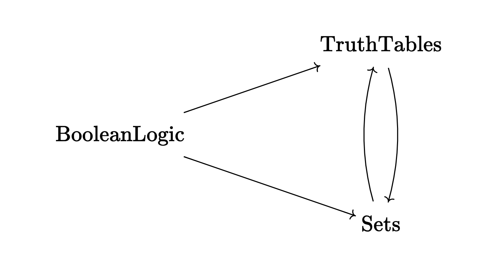

\(\newcommand{\sem}[1]{[\![#1]\!]}\)
Propositional Logic#
These notes assume some knowledge of propositional logic, truth tables and indirect truth tables as covered in many symbolic logic courses given in philosophy departments. 1
… summary of what is in here
The distinction between operational and denotational semantics comes from programming languages and is not usually applied to propositional logic. But introducing it here is an opportunity to explain ideas that may be important later on. For the purposes of this section, operational semantics refers to the semantics via truth tables while denotational semantics refers to the semantics via Venn diagrams (the set-theoretic semantics).
… Claim: the distinction syntax and semantics cannot itself be formalized (discuss whether this is another example of a circle of explanations) …
… Brouwer invented intuitionism to make clear that we cannot break the circle of explanations, but then his followers (from Heyting to Voevodsky) formalized intuitionistic logic and it is now at the heart of the most heroic attempts (Coq, Agda, Lean, HoTT, etc) to break the circle of explanations … could be interesting to explore this in more depth …
… in our discussions, this section has taken place over at least 3 different sessions …
Revision#
Show that the following formulas are valid (tautologies).
Show that the following formulas are not valid. Find counter-examples and express them in natural language.
Syntax of Propositional Logic#
We now recap propositional logic, giving a more formal account.
Roughly speaking, the word “syntax” refers to everything that can be done just moving around symbols without understanding the meaning behind a formal system.
Let \(\mathbb P\) be a set, the elements of which are called propositional variables or atomic propositions. Elements of \(\mathbb P\) are commonly written as \(P,Q,\ldots\).
Formulas of propositional logic are defined as follows. A formula is either
a propositional variable \(P\in\mathbb P\)
a conjunction \(\phi\wedge\psi\),
a disjunction \(\phi\vee\psi\),
a negation \(\neg\phi\)
where \(\phi,\psi\) refer recursively to formulas of propositional logic.
We also use the following abbreviations:
We use rules for dropping parentheses.
\(\wedge,\vee\) are associative.
\(\neg\) has higher precedence than \(\wedge,\vee\), which have higher precedence than \(\to\) and \(\leftrightarrow\).
If you are not familiar with this terminology it should become clear by looking at the following example.
Instead of $\((((\neg P)\wedge (\neg Q))\wedge (\neg R))\to ((\neg P)\wedge (\neg Q))\)$
we write
Operational Semantics: Truth Tables#
The meaning of the connectives \(\wedge,\vee,\neg\) is given by truth tables, which I assume to be well-known.
Definition: An interpretation (or valuation) is an assignment of truth values to propositional variables, that is, a function \(v:\mathbb P\to \{0,1\}\).
Notation: We write \(\sem{\phi}_v\) for the truth value of \(\phi\) under the interpretation \(v\).
Note each row of a truth table corresponds to an interpretation.
Definition: A formula \(\phi\) is
satisfiable if there is an interpretation \(v\) such that \(\sem{\phi}_v=1\);
valid (=a tautology) if \(\sem{\phi}_v=1\) for all interpretations \(v\).
In other words, a formula is satisfiable if its truth table has a row that evaluates to 1 (true); a formula \(\phi\) is valid if all rows of its truth table evaluate to 1.
The next result is important. It follows directly from the definitions and the fact that Boolean logic is two-valued (that is, its only truth values are 0 and 1).
Proposition: A formula is valid if an only if its negation is not satisfiable.
Proof: Sketch out the truth table for the formula and its negation.
Denotational Semantics: Venn Diagrams#
We all know about Venn diagrams. Venn diagrams explain propositional logic by mapping each proposition to a set and by replacing the logical operations by set-theoretic ones.
Boolean Logic |
Venn Diagrams |
|---|---|
Propositions \(A,B,\ldots\) |
Sets \(A,B,\ldots\) |
\(A\wedge B\) |
|
\(A\vee B\) |
|
\(\neg A\) |
|
\(A\to B\) |
?? |
Intersection and union seem rather straight-forward (even if we had some debate here as well).
Complement and implication are more subtle. They are also related because in Boolean logic \(A\to B = \neg A\vee B\).2
… a remark on why negation requires us to introduce a universe \(U\) …
Now let us come back to the implication \(A\to B\).
The implication \(A\to B\) is often illustrated as via the Venn diagram for \(A\subseteq B\). But while often useful, this does not work for a translation of propositions to sets because \(A\subseteq B\) is not a set but a proposition.
So which set should represent \(A\to B\)?
We use that \(A\to B=\neg A\vee B\) in Boolean logic and represent \(A\to B\) by the Venn diagram for \(A^c\cup B\).
There is still something missing. When we reason in propositional logic, we want to prove that certain propositions are true, for example, 3
Or, we may ask to find truth-values for \(P,Q\) such that
Thus, in order to complete the table which assigns sets to propositions, we also need translate \(\sf True\) and \(\sf False\).
Boolean Logic |
Venn Diagrams |
|---|---|
Propositions \(A,B,\ldots\) |
Sets \(A,B,\ldots\) |
\(A\wedge B\) |
|
\(A\vee B\) |
|
\(\neg A\) |
|
\(A\to B\) |
|
\(\sf True\) |
\(U\) |
\(\sf False\) |
\(\{\}\) |
We see now that \(A\subseteq B\) is not the translation of \(A\to B\) to Venn diagrams, but rather (equivalent to) the translation of \(A\to B=\sf True\):
Exercise: Show that \(A\subseteq B\) if and only if \(A^c \cup B = U\).
Comparing Operational and Denotational Semantics#
We have now two different semantics and they should be equivalent in some sense. (The equivalence of operational and denotational semantics is called adequacy in programming languages.)
{kind=link}
If we take a formula of propositional logic \(\phi\) on the left and interpret it via truth tables and via Venn diagrams, these two interpretation should be equivalent.
The upper arrow can just map a formula to its truth table.
But what about the lower arrow? In order to assign a Venn diagram to a formula we first need to construct the elements of the sets that will appear in the diagram. In other words, in the notation from the previous section, we need to construct the universe \(U\).
This is a deep and beautiful problem that we can discuss some other time …
Appendix: The Method of Indirect Truth Tables#
Read the following together with the notes you took in class. The example we did in class was \(P\wedge Q\to P\vee Q\).
Input: A formula.
Output: “Yes”, if the formula is valid. “No” and a counterexample, if the formula is not valid.
The algorithm proceeds as follows.
Write the formula as its syntax tree.
Label the root as 0. 4
Use the truth table of the connective at the root to draw conclusions about the truth values of the children.
Proceed recursively through the syntax tree.
If you need to make a guess to proceed, make a copy of the syntax tree so that you can backtrack and investigate other possible choices later.
If your current choice does not lead to a contradiction, this choice exhibits a counterexample to \(\phi\). Output “No” and the counterexample. 5
If your currenct choice leads to a contradiction backtrack. If all choices lead to a contradiction \(\phi\) is valid. Output “Yes”. 6
- 1
In logic and computer science this method is known as propositional tableaux or semantic tableaux. The main difference is that indirect turth tables are more instructive to do pen-and-paper, while propositional tableaux are easier to make precise as an algorithm that can be implemented on a computer. But the basic idea is the same, namely to try to avoid to explicitly write out all rows of a truth table (which grows exponentially in the number of propositional variables).
- 2
This is where we started an excursion into intutionstic logic, mainly to say that there are logics in which these three connectives have a different meaning than in Boolean logic. We also talked about Brouwer, the circle of explanations, his relationship to Hilbert and Heyting and Brouwer’s legacy and influence on computer science and the formalization of mathematics in proof assistants such as Coq, Agda and Lean. An interesting article on Brouwer the person and the philosopher is Brouwer’s Intuitionism by Victor Pambuccian (2022) … https://www.youtube.com/watch?v=-zDQclKXN1Y …
- 3
Many proof systems of propositional logic do not write the part \(=\sf True\). But that doesn’t mean that it is not there “semantically”.
- 4
I formulate the algorithm as an algorithm for refutability, searching for an interpretation \(v\) under which \(\phi\) evaluates to 0, that is, \(\sem{\phi}_v=0\). The same method, when starting with the label 1 at the root can be used to as an algorithm for satisfiablity, searching for an interpretation \(v\) under which \(\phi\) evaluates to \(1\), that is \(\sem{\phi}_v=1\). Note that the algorithm for refutability on input \(\phi\) performs the same steps as the algorithm for satisfiability on input \(\neg\phi\). It follows that refutability and satisfiability are equivalent problems. For the purposes of this lecture, I find the algorithm for refutability more intuitive, but in the literature it is satisfiability which plays the dominant role.
- 5
If there is a choice that does not lead to a contradiction, we know that the equation \(\phi=0\) has a solution, that is, that there is an interpretation such that \(\neg\phi = 1\). This interpretation is a counterexample to \(\phi\) being valid.
- 6
If all choices lead to a contradiction, we know that the equation \(\phi=0\) has no solution, that is, that \(\neg\phi\) is not satisfiable, that is, that \(\phi\) is valid.